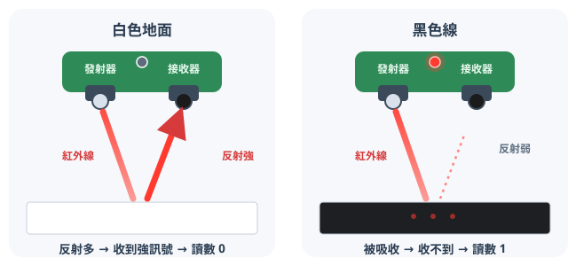
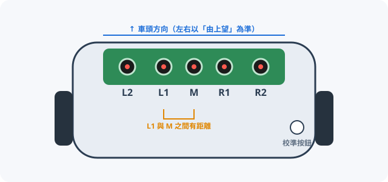
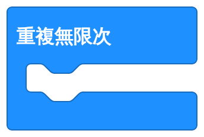
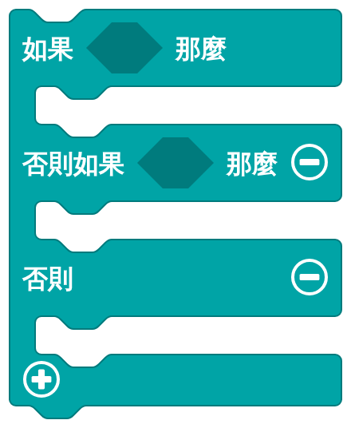
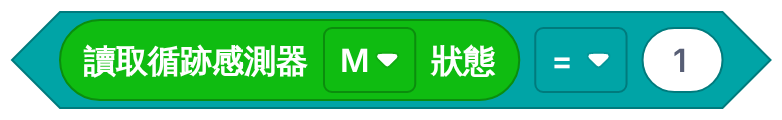
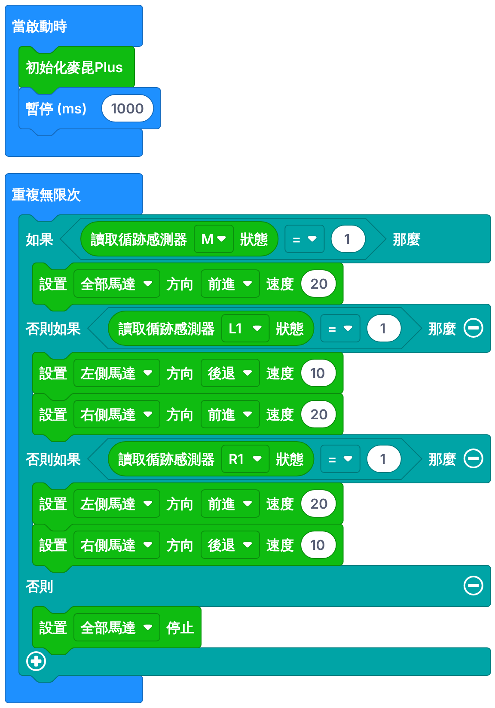

開始之前
今課 1–2 人一組，每組用一部電腦、交一份報告。兩人一組的話，在「組員二」填另一位同學。
完成今課後，你能夠：
- 說出巡線感應器的讀數：黑線 ＝ 1，白色 ＝ 0。
- 用巡線程式令小車自己走完一圈，再逐步提速。
本課滿分 50 分：讀 1 定 0 練習 10、提速記錄 15、老師驗收 25（圓滿完成 25／部分完成 15／未完成 5）。
巡線感應器：黑線 ＝ 1，白色 ＝ 0
10 分巡線感應器會射出紅外線，再看反射回來多少：
- 白色地面反射多 → 讀數 0，車底指示燈熄。
- 黑線吸收紅外線、反射少 → 讀數 1，車底指示燈亮。


練習：會讀到 1 定 0？10 分
記住：感應器不懂看顏色，只看反射多少。反射少就是 1。
車頭伸出桌邊（懸空）會讀到 1，小車以為在黑線上，會繼續向前跌落地！所以一定要在地面測試。
巡線程式
記住一句：黑線在哪邊，就轉向那邊M 看到黑線就直行；L1 看到就向左轉；R1 看到就向右轉；三個都看不到就停車。
| 感應器 | 小車要做什麼 | 馬達 |
|---|---|---|
| M ＝ 1 | 直行 | 全部馬達 前進 20 |
| L1 ＝ 1 | 向左轉 | 左側 後退 10、右側 前進 20 |
| R1 ＝ 1 | 向右轉 | 左側 前進 20、右側 後退 10 |
| 都是 0 | 停車 | 全部馬達 停止 |
今次的新積木
| 積木 | 在哪裏找 | 作用 |
|---|---|---|
 | 基本 | 不停重複：不停看感應器、不停修正 |
 | 邏輯 | 按左下角的 ⊕ 可以加入「否則如果」 |
 | 邏輯 ＋ 麥昆Plus V2&V3 | 放進「如果」：這個感應器看到黑線嗎？ |
「＝」積木在「邏輯」；「讀取循跡感測器」在「麥昆Plus V2&V3」，把它放進「＝」的左邊。
照圖砌出程式

✚開新專案及加入擴展（和上一課一樣）
- 開啟 makecode.microbit.org，按「新專案」，名稱：
班別_學號_linebot。 - 按「擴展」，按下面的「複製」，在搜尋欄按 Ctrl＋V 貼上，按 Enter，選 maqueenPlusV2。
校準、下載、測試
1校準感應器（第一次測試前）
- 把小車放在巡線圖的黑色位置，令車底感應器對着黑色。
- 長按車面的校準按鈕（Cal-Key）約 1 秒，指示燈閃過就完成。
- 檢查：放在白色上，車底指示燈熄；放在黑線上，指示燈亮。
2下載
和上一課一樣：關電源 → 接 USB → 按「下載」→ 等黃燈停閃 → 拔線。
3放車、開電源
- 把小車放在 O 形巡線圖上，黑線在車底正中（M 對正黑線）。
- 開電源，縮手。小車 1 秒後起步，自己沿黑線走。
走得完之後：10 秒內走完一圈
15 分目標：10 秒內走完一圈小車走得完一圈後，逐步提速，直至可以在 10 秒內走完一整圈而不脫線。
同組一人開電源，另一人用下面的計時器計時：小車起步就按「開始」，回到起點就按「停止」，再按「填入記錄表」。每次只改一樣，再記錄結果。
| 記錄表的欄 | 程式裏哪個數字 | 起步數字 |
|---|---|---|
| 直行 | M ＝ 1 時「全部馬達 前進」 | 20 |
| 後退的一邊 | L1 或 R1 ＝ 1 時，向後轉的馬達（向左轉＝左側） | 10 |
| 前進的一邊 | L1 或 R1 ＝ 1 時，向前轉的馬達（向左轉＝右側） | 20 |
提速方法：直行和前進的一邊每次一齊加 10；後退的一邊改成前進的一邊的一半。
提速記錄表15 分
每試一次填一行，最後一欄會告訴你下一次試什麼。至少記錄 3 次。
出了問題？
| 現象 | 檢查 |
|---|---|
| 完全不動 | 有「初始化麥昆Plus」嗎？電源開了嗎？ |
| 不理黑線，一直向前 | 「＝ 1」寫對嗎？有沒有校準？ |
| 一開始就打轉 | 放車時黑線要在車底正中 |
| 彎位衝出黑線 | 速度太快，減 10 |
| 轉錯方向 | 黑線在左就向左轉：左輪後退、右輪前進 |
老師驗收
25 分達到目標（或已盡力）後，請老師來看一次，老師會揀選結果。
挑戰（做得快的組別）
在不脫線的情況下，看看你們最快可以幾秒走完一圈。
總結及學習日誌
- 巡線感應器：黑線 ＝ 1，白色 ＝ 0。
- 黑線在哪邊，就轉向那邊。
- 巡線程式放在「重複無限次」內，令小車不停看、不停修正。
學習日誌（不計分）
你們最快幾秒走完一圈？用了什麼速度？
下一課預告流程圖：先畫圖，再寫程式，令小車轉得更順。
成績及交功課
每組下載一份成績報告（兩人一組時檔名有兩個名字），上傳到 Google Classroom／eClass。